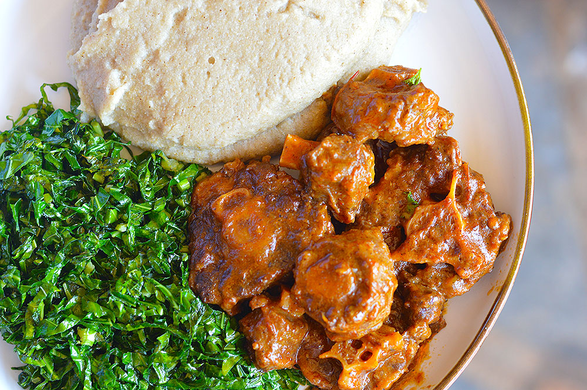

Back to Home
Sadza Recipe

Decription
Sadza is a traditional staple food in Zimbabwe and other parts of Southern
Africa. Made from finely ground maize (cornmeal), it is a thick porridge
that is served as the main dish in many households. It is similar to
dishes like polenta or ugali found in other regions of Africa. Pair it
with vegetables, chicken, or oxtail for a complete and satisfying meal.
Ingredients
- 2 cups maize meal (cornmeal)
- 4 cups water
Steps
- Bring 3 cups of water to a boil in a large pot.
-
In a separate bowl, mix 1/2 cup of maize meal with 1 cup of cold water
to form a smooth paste.
-
Gradually add the maize meal paste to the boiling water, stirring
constantly to avoid lumps.
-
Reduce the heat to low and simmer for about 5 minutes while stirring
occasionally.
-
Slowly add the remaining maize meal to the pot, a little at a time,
stirring continuously.